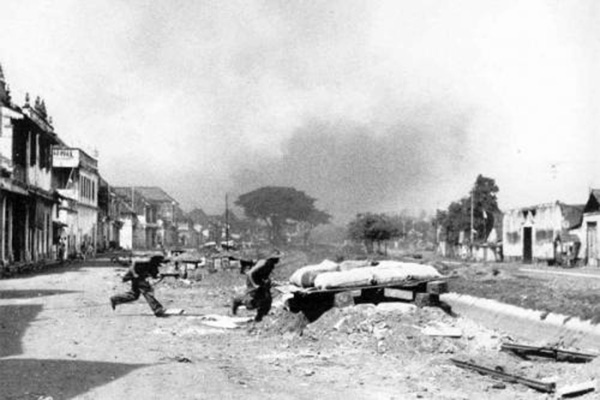

1.3.1 Pertempuran Heroik di Surabaya

Sekutu Brigade 49 yang dipimpin oleh Brigjen Aubertin Walter Sothern Mallaby mendarat di Surabaya pada 25 Oktober 1945 untuk melucuti serdadu Jepang dan menyelamatkan tawanan Sekutu. Hal tersebut disambut baik oleh pemerintah dan rakyat Jawa Timur. Sambutan baik itu disusuli keputusan-keputusan berikut:
- Inggris berjanji tidak menyertakan tentara NICA dalam pasukannya
- Kedua belaj pihak akan kerja sama menjamin keamanan dan kententeraman
- Dibentuk Kontak Biro agar kerja sama dapat terlaksana sebaik-baiknya
- Inggris hanya akan melucuti senjata Jepang
Mendengar itu, rakyat Surabaya menyerang semua pos Sekutu pada 18 Oktober 1945. Terjadinya pertempuran membuat Mallaby hampir tewas.
Di Gedung Bank Internatio di Jembatan Merah, pemuda yang mengepung gedung tersebut meminta agar Mallaby dan pasukannya menyerah. Terjadi pertempuran sengit yang menghasilkan kematian Brigjen Mallaby.
Kematian Mallaby ditanggapi Kontak Biro dengan menyatakannya sebuah kecelakaan. Tanggapan tersebut membuat pihak Inggris kecewa. Pada tanggal 7 November 1945, pihak Inggris menulis bahwa rakyat Surabaya menghalangi tugas Sekutu dan Sekutu akan menduduki Surabaya.
Pada hari itu juga, Sekutu mengeluarkan ultimatum dimana penduduk Surabaya wajib menyerahkan senjatanya. Mereka juga harus menyerahkan diri dan mengangkat tangan di atas dengan batas pukul 10 November 1945 pukul 06.00 WIB.
Mendengar hal tersebut, rakyat Surabaya siap siaga. Komandan Pertahanan Kota, Sungkono membagi Surabaya menjadi tiga sektor pertahanan:
- Sektor Barat - Koenkiyat
- Sektor Tengah - Kretarto dan Marhadi
- Sektor Timur - Kadim Prawirodihardjo
- Bung Tomo - Membakar semangat juang lewat radio

Ribuan orang menjadi korban dalam pertempuran tersebut. Untuk mengingat jasa pahlawan di Surabaya, 10 November diperingati sebaga Hari Pahlawan.
1.3.2 Pertempuran Bojongkokosan
Untuk memberi solusi atas pelanggaran pihak sekutu, konvoi-konvoi Sekutu perlu dihadang. Titik pertama terdapat di Bojongkokosan.
Konvoi perbekalan sampai di Bojongkokosan pada pukul 16.30 WIB dan terpaksa berhenti. Sebagai pemula, terdapat serangan tipuan yang awalnya diremehkan. Berbagai senjata dan granat dikeluarkan saat pertempuran tersebut.
Perjuangan pasukan di Bojongkokosan berakhir ketika pesawat Inggris mengeluarkan tembakannya. Ketika kehabisan mesiu, pasukan Bojongkokosan mengundurkan diri.
1.3.3 Pertempuran Medan Area

Pasukan Sekutu mendarat di Medan pada 9 Oktober 1945. Pemerintah RI awalnya menghormati tugas Sekutu untuk melucuti tentara Jepang. Mereka diberi fasilitas hotel dan memasang tenda lapangan. Pada 10 Oktober 1945 tentara Sekutu mendatangi kamp tawanan Belanda, membebaskan tawanan, dan menjadikannya menjadi Medan KNIL Batalyon.
Para tawanan menjadi arogan. Dengan berbagai insiden, seperti merampas dan menginjak lencana merah putih yang dipakai seseorang. Pada 18 Oktober 1945 dikeluarkan ultimatum dimana semua senjata harus diserahkan ke Sekutu. NICA pun juga mulai meningkatkan aksi terornya.
Pada 1 Desember 1945, Sekutu memasang papan bertuliskan "Fixed Boundaries Medan Area" atau Batas Resmi Medan Area. Hari setelahnya, Sekutu dan NICA menjadikan seluruh daerah Medan sebagai sasaran tempur. Hingga akhirnya terpaksa rakyat mundur ke Pematang Siantar.
Pada akhirnya, para pejuang menggabungkan diri ke Komando Resimen Laskar Rakyat Medan Area. Serangan yang konstan merepotkan pertahanan Sekutu dan NICA
1.3.4 Pertempuran Ambarawa

Berawal dari pertempuran di Magelang karena Sekutu disertai NICA, tentara Sekutu diam-diam meninggalkan Magelang ke Ambarawa. Dua desa di Ambarawa mencoba direbut oleh tentara Sekutu dan membawa TKR dari Banyumas, Salatiga, Surakarta, dan Yogyakarta untuk membebaskan desa-desa tersebut.
Setelah disusun strategi perang yang bagus oleh Kolonel Soedirman dan komandan sektor pertempuran, pada 04.30 WIB 12 Desember 1945, pasukan Indonesia melancarkan serangan serentak.
Konvoi Sekutu diserang dan pada akhirnya mundur ke Semarang. Pertempuran berlangsung selama 3 hari sampai akhirnya selesai. 15 Desember sekarang dirayakan sebagai Hari Infanteri.
1.3.5 Peristiwa Merah Putih di Manado

Setelah jepang menyerahkan kekuasaan di Tondano, pada 21 Agustus 1945, bendera merah putih dikibarkan di Sulawesi Utara. Sekutu dan NICA melarang adanya pengibaran bendera merah putih tersebut.
Pada akhir 1945, tentara Australia menyerahkan kekuasaan kepada NICA. Pemimpin rakyat yang tidak ditangkap oleh NICA bekerja sama dengan anggota KNIL pro-republik. Kedua pihak mengadakan rapat rahasia yang ternyata terdapat pihak NICA. Belanda menyita semua senapan dan peluru anggota KNIL tersebut.
Pada 14 Februari 1946, 8 anggota KNIL pro-RI membebaskan tawanan yang disekap. Selanjutnya, dibentuk pemerintahan RI di Sulawesi Utara dengan B.W. Lapian sebagai residennya, dibentuk juga Tentara Republik Indonesia.
1.3.6 Bandung Lautan Api

Ketika Sekutu datang ke Kota Bandung, pejuang Bandung sedang merebut senjata Jepang. Sekutu langsung mengeluarkan ultimatum agar semua senjata dari tentara Jepang diberi dan untuk mengosongkan Utara Kota Bandung selambatnya pada 29 November 1945.
Rakyat Bandung yang tidak ingin memberikan daerahnya membuat pertempuran bermunculan.
Sekutu mengeluarkan ultimatum kedua pada 23 Maret 1946. Ultimatum tersebut menyebutkan bahwa Bandung dikosongkan militer dan pemerintah RI. Sehari sebelumnya perintah yang sama juga disampaikan dari pemerintah RI di Jakarta.
Tapi pada akhirnya, rakyat Bandung meninggalkan kotanya. Tapi tidak sebelum pejuang melancarkan serangan ke Sekutu.